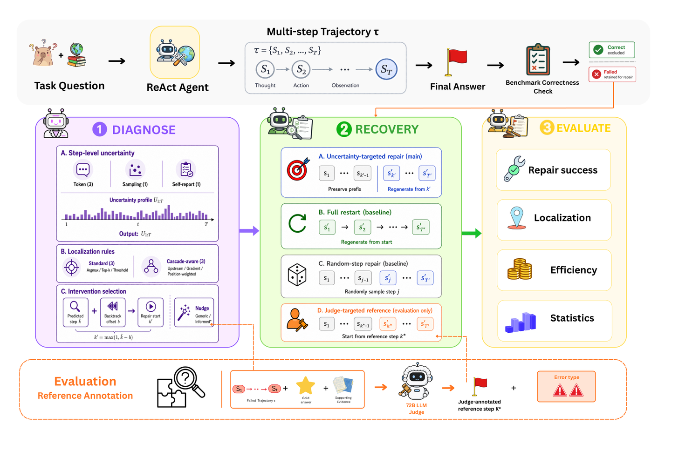
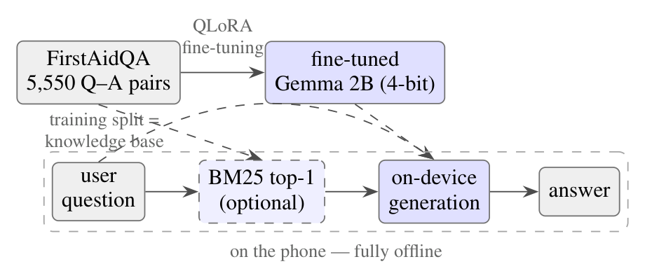
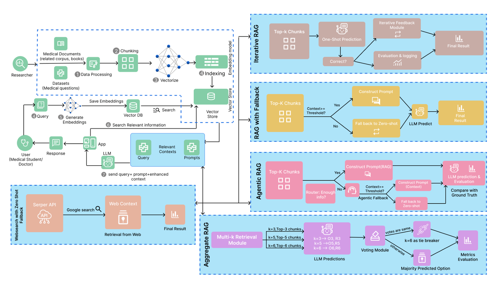
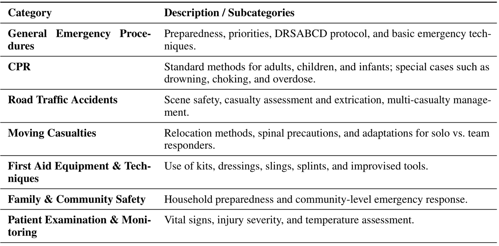
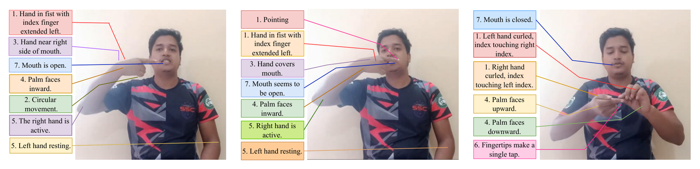

Uncertainty & Failure Repair
When a reasoning chain breaks, which step broke it? I study step-level uncertainty signals as a way to localize failures in LLM agents, and when targeted repair beats simply starting over.
Research Assistant, ELITE Research Lab · B.Sc. in CSE, Islamic University of Technology
My current research spans three interconnected directions:
Model Understanding: Investigating step-level uncertainty, internal representations, and the effects of model adaptation on language model behavior.
Model Development: Advancing parameter-efficient adaptation, quantization, retrieval-augmented generation, and fairness-aware language models.
Model Evaluation: Developing datasets, benchmarks, and evaluation frameworks for healthcare and low-resource NLP.
Large models are impressive in aggregate and unreliable in particular. My work sits at the point where that gap becomes dangerous: multi-step agents that fail silently, compressed models that quietly change who they serve well, and languages where no benchmark exists to notice either problem.
When a reasoning chain breaks, which step broke it? I study step-level uncertainty signals as a way to localize failures in LLM agents, and when targeted repair beats simply starting over.
Quantization is treated as a lossless convenience. I investigate the mechanistic story — how low-bit compression rewires internal computation, and which of those changes induce bias.
Aggregate benchmarks hide mechanisms. I want to open the model up — attributing behaviour to circuits and representations rather than inferring it from output-level scores alone.
Retrieval routing, iterative feedback, evidence aggregation and agentic policies — evaluated head-to-head rather than assumed, in a domain where a wrong answer has a cost.
Bengali biomedical QA, Bengali sign language instruction generation. Building the first benchmarks for communities that current evaluation simply does not see.
First-aid guidance is needed exactly where connectivity is not. I build and rigorously evaluate assistants that must run on-device, offline, and never give dangerous advice.
Six works across LLM agents, model efficiency, retrieval and low-resource NLP. Every figure below is from the paper itself — click to enlarge.

EnlargeSubmitted to AAAI Conference on Artificial Intelligence (AAAI-27)
When a multi-step agent fails, should it redo the broken step or restart? A systematic answer across 3 benchmarks, 8 open-weight models and 33 repair strategies.

EnlargeSubmitted to the 19th International Conference on Natural Language Generation (INLG)
A first-aid assistant that runs entirely on a mid-range phone — plus evidence that evaluation design substantially changes the conclusions.

EnlargeAccepted to IEEE International Conference on Future Machine Learning and Data Science 2026
Bangla had no large-scale biomedical QA benchmark — this work builds both the benchmarks and the retrieval systems evaluated on them.

EnlargeAccepted to the 5th Muslims in ML Workshop, co-located with NeurIPS 2025
The models that could help in an emergency are too heavy for the low-tier devices first responders carry, and no dataset existed to train lighter ones.

EnlargeAccepted to the ICCV 2025 Workshop on Computer Vision for Accessibility
Recognition solves only half the conversation; instruction generation teaches non-signers to produce gestures — and Bengali Sign Language had no dataset for it.
Ongoing research project
Aggregate accuracy can hold steady under quantization while the model gets measurably worse for some groups — and nobody has explained the mechanism.
ELITE Research Lab LLC · New York, USA
Research on multimodal representation learning, uncertainty-aware learning, probabilistic inference and autonomous agentic systems for trustworthy AI. Design and implement large-scale experimental pipelines for calibration, uncertainty propagation, robustness under distribution shift and reproducible model assessment.
Technovative Solutions Limited · Dhaka, Bangladesh
Worked with AI technologies including large language models and retrieval-augmented generation pipelines, with a research-oriented focus on accuracy and depth.
Teletalk · Dhaka, Bangladesh
Streamlined billing processes for customer accounts and provided IT support and troubleshooting for internal software and hardware.
ALOHA · Dhaka, Bangladesh
Delivered lessons using ALOHA mental-arithmetic methodology and maintained an engaging learning environment.
Engineering work outside the papers — mostly applied ML and mobile systems aimed at a concrete user.
Speech emotion recognition comparing Wav2Vec 2.0 against HuBERT on the MELD dataset, with a real-time detection interface.
An accessibility-focused app that recognises handwritten digits produced by dyslexic writers, where standard recognisers fail.
Personal-safety mobile app with live location sharing, friend networks, self-defence tutorials and mood-based meditation.
Connects emergency patients with nearby blood donors to cut response time in critical situations.
Health and wellness platform bringing together workout tutorials, meal planning and meditation resources.
Mentee, Banglalink Womentor 6.0A national mentorship programme for women in STEM.
60% Scholarship — ISCEA PTAK Prize Case Competition 2023Awarded for performance in the international supply-chain case competition.
2nd Runners-up — AIUB Idea Contest“Introduction to Robotics” presented idea contest.
2nd Runners-up — ALOHA International Mental Arithmetic Competition 2012
I am applying for Computer Science Ph.D. programmes for Fall 2027. If your lab works on LLM reliability, interpretability, efficiency or NLP for under-served languages, I would love to hear from you.
saiymasittul@iut-dhaka.edu